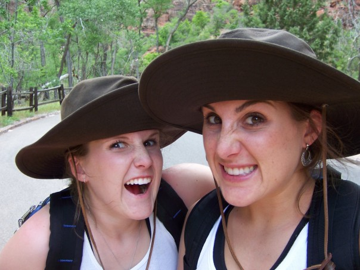

About Me
Hello! My name is Chelsey MacNeill. I am just learning how to do web development as this is my first website. I've accomplished other things in my life such as being an NCAA athlete, getting my B.S. in Mechanical Engineering, obtaining a certificate in Data Science and a welding certification. I enjoy knitting, reading, and debating anything and everything with anyone who will partake in a converstaion. I have a mini Australian shepherd named Mala and live in Seattle , Washington.